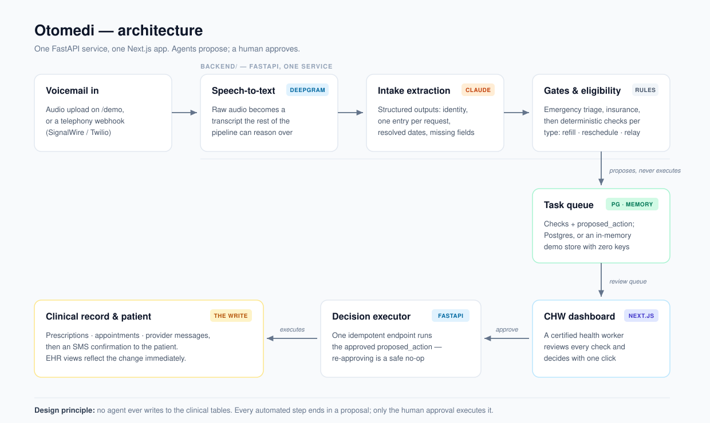

Otomedi: Multi-Agent Healthcare Automation
No upload required
A voicemail becomes a safe, reviewable action
One real scenario from Otomedi's permanent sample data.
“I need a refill for Lisinopril 10 mg.”
Maria says who she is, what she needs, and how the clinic can reach her. No app, portal, or form required.
Maria Gonzalez · DOB March 12, 1978 · Blue Cross PPO
Hi, this is Maria Gonzalez.
My date of birth is March 12, 1978.
I need a refill for Lisinopril 10 mg,
once daily with food.
Audio becomes searchable text
The recording becomes a normalized transcript while the raw provider response remains available for traceability.
- patient
- Maria Gonzalez
- date_of_birth
- 1978-03-12
- request.type
- refill
- orders[0]
- Lisinopril
- dosage
- 10 mg
- urgency
- routine
- insurance
- Blue Cross PPO
- missing_fields
- []
Language becomes schema-constrained intake data
Identity, request type, medication, dosage, urgency, timing, and missing fields become typed data that deterministic services can consume.
✓Insurance acceptedPass
✓Recent visit on filePass
✓Exact dosage matchPass
✓Upcoming visit scheduledPass
!Amlodipine interactionWarning
Rules verify the request against clinic records
Warnings stay visible without becoming silent blockers. Failed gates become plain-English escalations instead of automated writes.
- Request
- Prescription refill
- Action
- Refill Lisinopril 10 mg
- Warning
- Also taking Amlodipine
- Write access
- Locked until approval
The agent proposes. A person decides.
The work queue shows the transcript, every check, and the exact proposed action. Nothing clinical has changed yet.
Clinical record updatedThe existing prescription's fill date advances.
Patient confirmation sentA generic text confirms the approved refill.
Decision remains auditableThe task records who approved it and when.
Only human approval unlocks the write
One backend endpoint updates the clinical record exactly once, sends confirmation, and preserves the audit trail.
The Problem
By the end of a day at a hospital front desk, tens or hundreds of missed calls have piled up. Listening to every voicemail, writing down what the patient needs, and executing the request is slow, and the majority of those calls are one of just three things: a prescription refill, a schedule change, or a message for the doctor. Each one takes a series of clicks and lookups that lasts longer than the action itself.
Otomedi turns that voicemail backlog into a dashboard of pre-verified, one-click approvals. Repetitive requests get automated up to the point of human sign-off; edge cases are organized and surfaced for manual review instead of getting lost in an inbox.
How It Works

A voicemail flows through a pipeline of specialized agents, each with a single job:
- Intake Agent: receives the Deepgram speech-to-text transcript and uses Claude to extract structured data: patient identity, insurance plan, and a
requestsarray (a single voicemail can contain multiple workflow items, e.g. a refill and a message relay). Relative dates like “next Tuesday” are resolved to absolute dates at this stage, and missing fields are flagged explicitly. - Triage Sentinel: scans for emergency signals. Anything urgent bypasses automation entirely and escalates immediately.
- Eligibility Agents: verify the request against patient records: insurance acceptance, refill eligibility (visit history, dosage match, conflicting medications), or scheduling constraints, depending on request type.
- Scheduling Agent: finds an appointment slot given provider availability and urgency, writing a proposed action rather than a final one.
- Human approval: a certified healthcare worker reviews the proposed action in the dashboard. Only after they click Approve does the backend execute it.
- Confirmation & Summary Agents: send SMS confirmations to the patient and compile a daily digest for the front desk.
The agents don’t message each other directly. Typed payloads move through one FastAPI service, while each final set of checks and its proposed action is persisted on a shared task row. That row makes the human review boundary observable, testable, and auditable.
Designed Around Safety
The most important design decisions were about what not to automate:
- Emergencies bypass automation entirely. The triage sentinel runs before any workflow logic, and an urgent signal short-circuits the whole pipeline into human escalation.
- No clinical action executes without human sign-off. Agents can parse, verify, and propose, but the write to prescriptions, appointments, or messages only happens after a healthcare worker approves it.
- Regression tests pinned to specific scenarios. Per our mentor’s guidance, each agent ships with tests for named failure cases (garbled audio, missing fields, conflicting medications), not just happy paths.
Technologies & Tools
Agents & backend: Python, FastAPI, Claude API for extraction and verification, Deepgram for speech-to-text
Frontend: Next.js dashboards: a CHW approval dashboard, a demo EHR, and an audio-upload demo
Data: Supabase (Postgres) as the shared task store and system of record for patients, visits, prescriptions, and schedules
The Post-Hackathon Rebuild
The hackathon demo stopped working about a week after the event: it spanned five separately deployed pieces (two Python services, three Next.js apps) across free-tier hosts, and the first one to lapse took the rest down with it. The rebuild treated that as the main lesson rather than an embarrassment:
- One backend, one web app. The two Python services — split along team boundaries, with intentionally duplicated logic — became a single FastAPI service; the three Next.js apps became one, with the dashboard, the pipeline demo, and the EHR mock as routes. The test suite stayed green through the merge.
- A demo that cannot die. With no credentials configured, the backend swaps its Supabase repositories for in-memory adapters behind the same interface, and the web app falls back to an in-repo seed. The hosted demo is a static-hosting deployment with zero environment variables — nothing left to auto-pause.
- Structured outputs and a pinned eval. Intake extraction moved from parse-the-markdown-fences to Claude structured outputs, with format enforcement in a JSON schema instead of prompt prose. An eval harness scores the extractor field-by-field on ten canonical voicemail transcripts against pinned expected outputs.
- The pipeline made visible. /demo now starts with a self-running cached scenario — no file upload required — showing the transcript, extracted fields, every eligibility rule’s verdict (including a drug-interaction warning that deliberately doesn’t block), the human review boundary, and the final clinical write.
174 regression tests run in CI on every push.
Reflection
The interesting engineering problem wasn’t getting an LLM to read a voicemail. It was deciding where automation must stop. Healthcare punishes false confidence, so the architecture treats the human approval click as a first-class pipeline stage rather than an afterthought. Structuring agent communication through a shared database row, instead of direct agent-to-agent messages, is what made the system debuggable at hackathon speed: every intermediate decision was inspectable in one table. The rebuild added a second lesson: a portfolio demo is a distributed system with an uptime requirement and no on-call rotation, so it has to be designed to degrade — the version that survives is the one that needs nothing to stay alive.
Built at the UC Berkeley AI Hackathon, June 2026.